Write 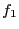 as
and substitute this into Eq. (112), giving an equation of 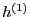,
Eq. (114) agrees with Eq. (35) in Porcelli's
paper[1]. For notation convenience, we define
 as
as
which can be called ``perturbed Lagrangian'' (I do not care the name of
, and
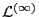 is only a notation without any
physical meaning since I do not need this meaning to derive anything). Since
we are considering toroidal symmetrical case, different toroidal harmonics of
perturbation are independent. Thus we can consider a single toroidal harmonic,
i.e, the  dependence of components of
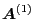 and
dependence of components of
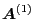 and
 is
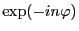. Further due to that the
equilibrium is time-independent, we can consider a single time harmonic, i.e.,
the time dependence of the perturbation is
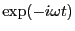. Then, using
Eq. (115), Eq. (99) is written as
is
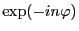. Further due to that the
equilibrium is time-independent, we can consider a single time harmonic, i.e.,
the time dependence of the perturbation is
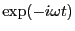. Then, using
Eq. (115), Eq. (99) is written as
and
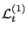 in Eq. (98) is written as
Using Eqs. (116) and (117), Eq. (114) is written as
Define
then Eq. (118) is written as
Eq. (120) agrees with Eq. (40) in Porcelli's paper. Define 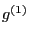
as
then satisfies (note that
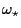 and
 are both functions of constants of motion, thus can be
taken out of the orbit integration)
are both functions of constants of motion, thus can be
taken out of the orbit integration)
YouJun Hu
2014-05-19